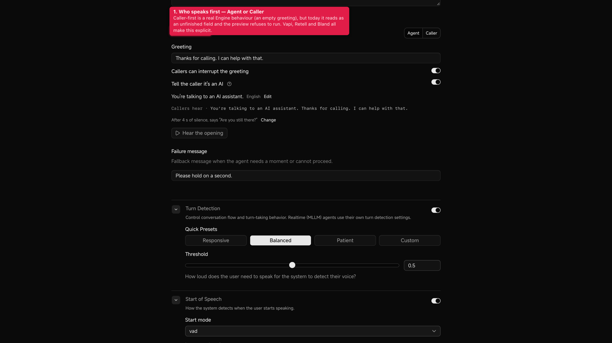
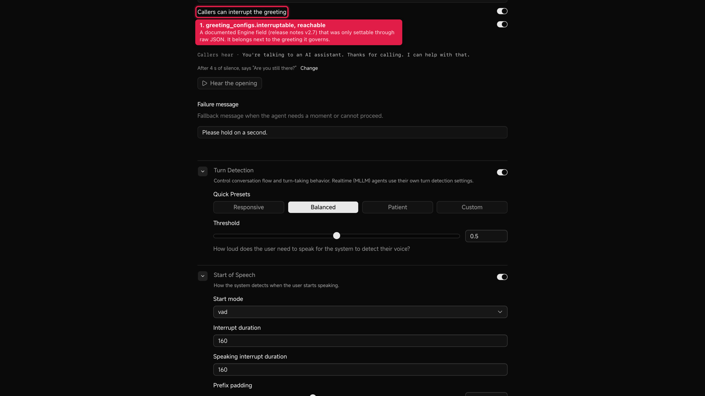
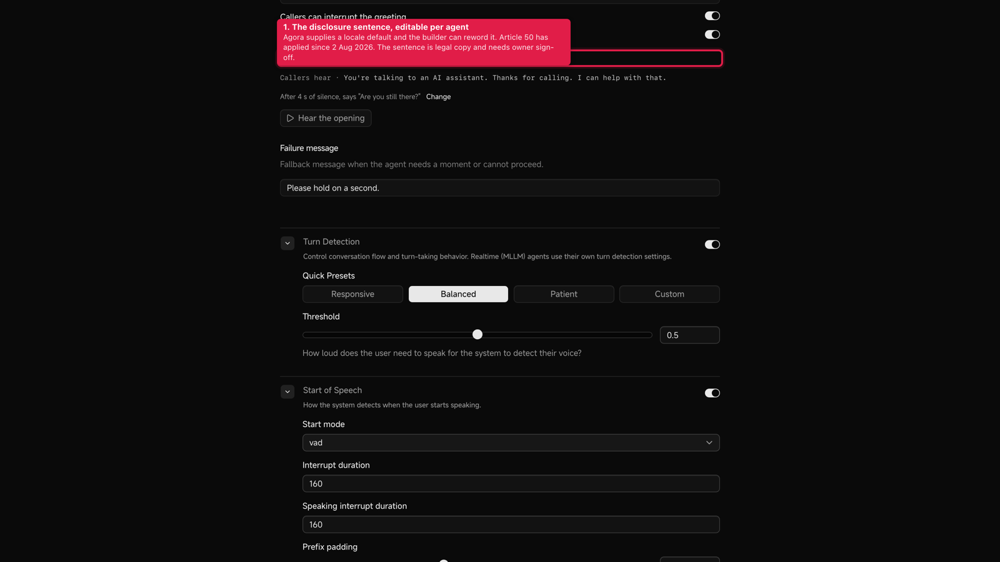
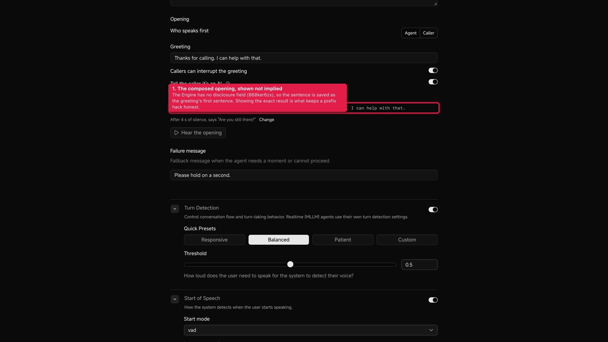
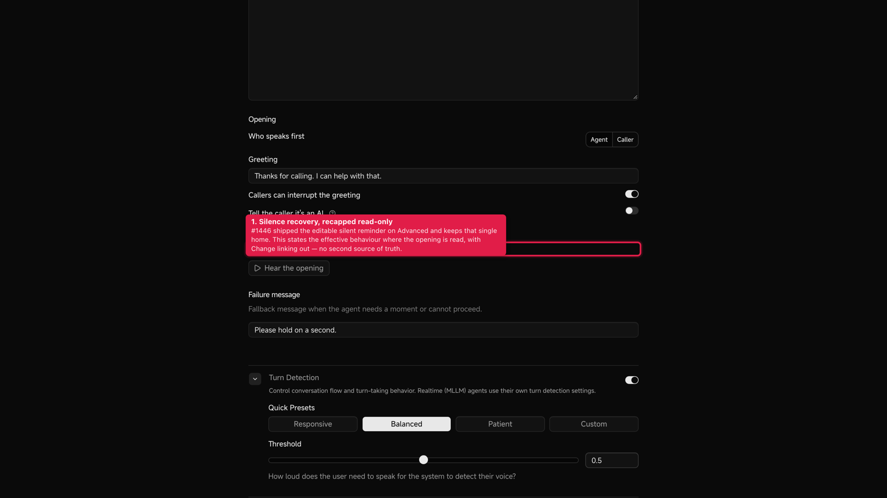
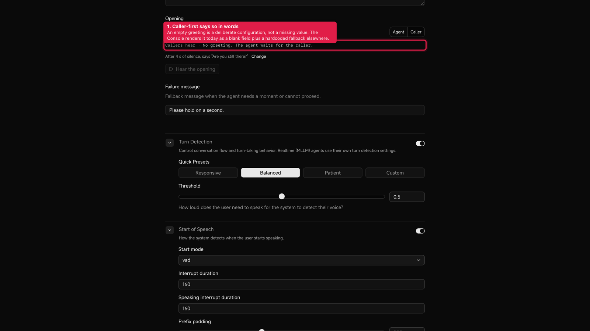
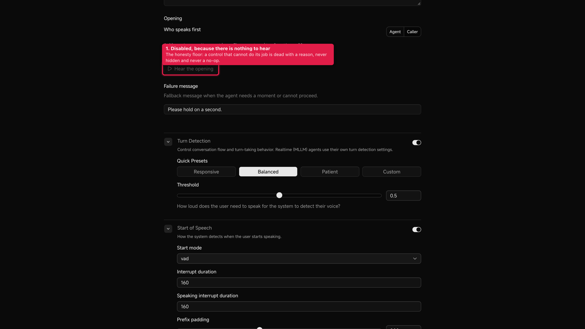
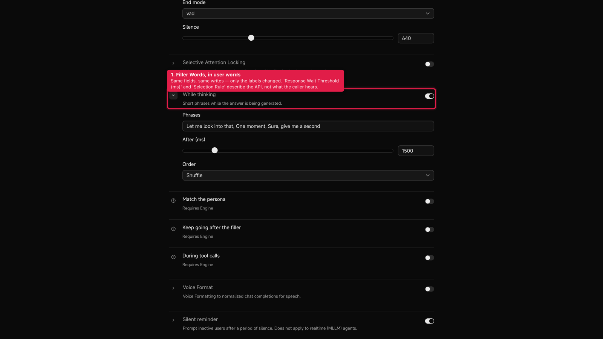
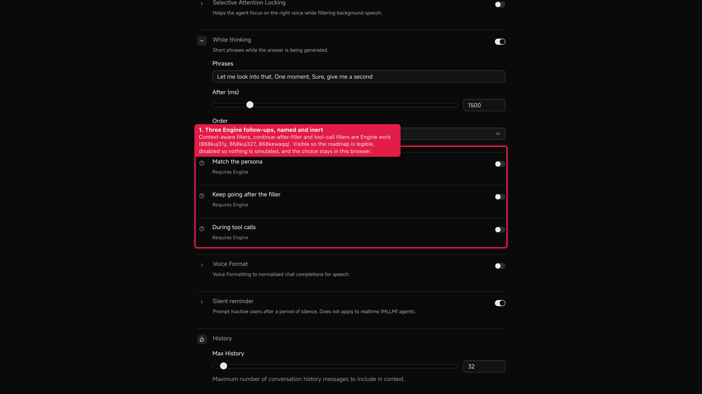

Design Tracker 04 · Greeting, filler & disclaimer · step 5 prototype · 2026-09-10
The converged direction from 05-directions.html built additively on the live Console code (AgoraIO/ng-console, branch design/sandbox), against the real agent properties. Nothing mocked: every value in the screenshots is read from, and written back to, the same llm / filler_words / parameters.silence_config objects the Console publishes.
Opening section replaces the lone Greeting field. The Advanced half relabels the Filler Words row and adds three inert rows under it.c4bba4e5 on design/sandbox (rebased on origin/staging the same day, so it sits on top of #1443 and #1446).tsc clean · 306 tests pass across 10 files (composition 8 · drafts 4 · greeting_configs 3 · section 11 · engine rows 2 · plus the existing drawer / detail / workspace suites) · Biome clean on every touched file.| Piece | From direction | What it does on the live model |
|---|---|---|
| Opening section | A | Replaces the Greeting <section> in AgentPromptForm, behind an optional opening prop. Agent Detail passes it; the create flow keeps the plain field untouched. |
| Who speaks first | A | Agent = the greeting field. Caller = greeting_message: "", the greeting and both switches disappear, and the last agent-first greeting is restored on the way back. |
| Callers can interrupt the greeting | A | Writes llm.greeting_configs.interruptable — a documented field (release notes v2.7) that had no control anywhere. Other greeting_configs keys are preserved on write. |
| Tell the caller it's an AI | A + B | Composes <sentence> <greeting> into the real greeting. The locale default is editable per agent with Edit / Reset; the tooltip cites Article 50 and says the sentence is saved as the greeting's first sentence. |
| Callers hear | A | Read-only aria-live line showing the exact composed value, or “No greeting. The agent waits for the caller.” |
| Silence recap | D | One read-only sentence derived from the real parameters.silence_config (ms → s), with Change switching to the Advanced tab. #1446 keeps the only editable home. |
| Hear the opening | E | Starts the existing live preview, stops after the first agent turn, and prints Opening · {n} s. Disabled for caller-first and while a preview is already running. |
| While thinking | C | i18n values only on the existing Filler Words row: Phrases · After (ms) · Order (Shuffle / In order). Same fields, same writes. The minimum on the wait threshold went 0 → 100 to match the contract. |
| Three inert rows | C | Match the persona · Keep going after the filler · During tool calls. Disabled switches, caption Requires Engine, tooltip naming the ticket; the choice is kept in sessionStorage only. |


greeting_configs.interruptable, reachable without raw JSON.






| Fact | Source in ng-console | Rule applied |
|---|---|---|
| Greeting | llm.greeting_message, or mllm.greeting_message when mllm.enable | Both paths already existed in handlePromptDraftChange; the section only changes what string is written. |
| Disclosure on/off | derived, not stored | splitOpening() tries the agent's stored sentence, then the locale default. A greeting that no longer starts with a known sentence reads as disclosure off; a sentence that continues into another word (…assistant.com) never matches. |
| Caller-first | greeting_message === "" | Derived, with a local override so clearing the field by hand does not flip the toggle mid-typing. |
| Interruptible greeting | llm.greeting_configs.interruptable | New greetingConfigs member on OrchestrationDraft; written through the SDK's index signature (untyped in agora-agents 2.4.0), unknown sibling keys preserved. |
| Silence recap | parameters.silence_config.{timeout_ms, content} | Read-only. ms → s for display; the editable home stays the Advanced row from #1446, so there is one source of truth. |
| Filler phrases / wait / order | filler_words.* | Untouched structurally; only the labels changed and the wait minimum now matches the documented 100 ms floor. |
| Edited sentence · Engine intent | sessionStorage, key per agent | ng-console.design.04.opening:<agentId> and …filler-engine:<agentId>. Never written to properties. |
agent-editor-workspace.tsx still blocks an empty greeting. Left alone in this slice — it is a shared code path with the create flow. Logged as next.agent-detail-page.tsx substitutes it when an agent has no greeting, which fights caller-first. Not touched: it is pre-existing behaviour outside this direction. Logged as a finding.Opening · {n} s from the live preview's own agent-state transitions. The directions' richer transcript line would need preview internals changed.| Pass | Result |
|---|---|
| Fortify · empty | ok Empty greeting = caller-first, stated in words. Empty silence config = “Stays quiet if the caller goes silent”. No agent id = drafts fall back to in-memory defaults. |
| Fortify · loading | ok The section reads the builder's properties, which are already resolved when the Prompt tab renders; no new query. |
| Fortify · error | ok Preview errors and the “already running” state disable the button; a failed preview clears the pending state instead of hanging. |
| Fortify · edge | ok Round-trip proven for edited sentences, unknown prefixes, disclosure-only greetings, trailing whitespace while typing, and agent switches. sessionStorage unavailable → in-memory defaults. |
| Fortify · MLLM | ok Realtime agents hide the interrupt switch and the silence recap (greeting_configs is llm-only, silence_config does not apply) and say so in one line. |
| Include · names | ok Toggle group, switches and the sentence field all carry accessible names; the composed line is aria-live="polite"; the tooltip trigger has its text as its label. |
| Include · strokes | finding Unchanged from 07: the Console's control border token --input = --border-strong is about 1.7:1 on white, below the 3:1 the design office enforces with --stroke. The section uses the Console's own primitives on purpose; the token is a design-system finding, not this slice's fix. |
| Articulate · copy | needs a yes Only the proposed set from 05-directions. The default sentence “You're talking to an AI assistant.” is legal copy and needs owner sign-off before it ships. |
| Measure | wired ai_disclosure_enabled · caller_first_selected · greeting_previewed added to the observability taxonomy and fired from the section. |
src/lib/agents/greeting-composition.ts compose / split / caller-first, with the prefix rules src/lib/agents/greeting-composition.test.ts 8 cases (round-trip · toggle off · edited sentence · unknown prefix · …) src/lib/agents/opening-draft.ts sessionStorage per agent: sentence + Engine-row intent src/lib/agents/opening-draft.test.ts 4 cases (per agent · blank · corrupt · booleans) src/components/console/agent-opening-section.tsx the section src/components/console/agent-opening-section.test.tsx 11 cases src/components/console/agent-filler-engine-rows.tsx three inert rows src/components/console/agent-filler-engine-rows.test.tsx 2 cases src/lib/agents/orchestration-contracts.ts + OrchestrationGreetingConfigsDraft src/lib/agents/orchestration-properties.ts read/write llm.greeting_configs.interruptable src/lib/agents/orchestration-greeting-configs.test.ts 3 cases (read · preserve siblings · round-trip) src/components/console/agent-editor-workspace.tsx optional `opening` prop on AgentPromptForm src/components/console/agent-detail-page.tsx passes opening + greetingConfigs patch src/components/console/agent-config-drawer.tsx agentId prop · Order labels · engine rows mount · min 100 src/components/console/agent-advanced-page.tsx passes agentId src/lib/i18n/resources/en/common.ts pages.agents.opening.* + filler relabels src/lib/observability/types.ts 3 new passive events
AgentPromptForm (with the opening prop) and the real AdvancedSharedSection against fixture properties. The harness was deleted before the commit; it is not on the branch. Every component, every write path and every string in the shots is the shipped code.07-review.md.agent-detail-page.tsx; the reversed turn order in the static preview mock; the Greeting field's aria-label mismatch (fixed here, but only on the Detail path).llm.disclosure_message (868ker6zx), the prefix composition retires and the sessionStorage sentence moves into properties.